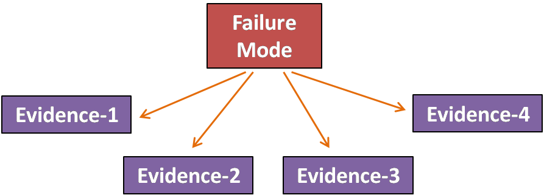
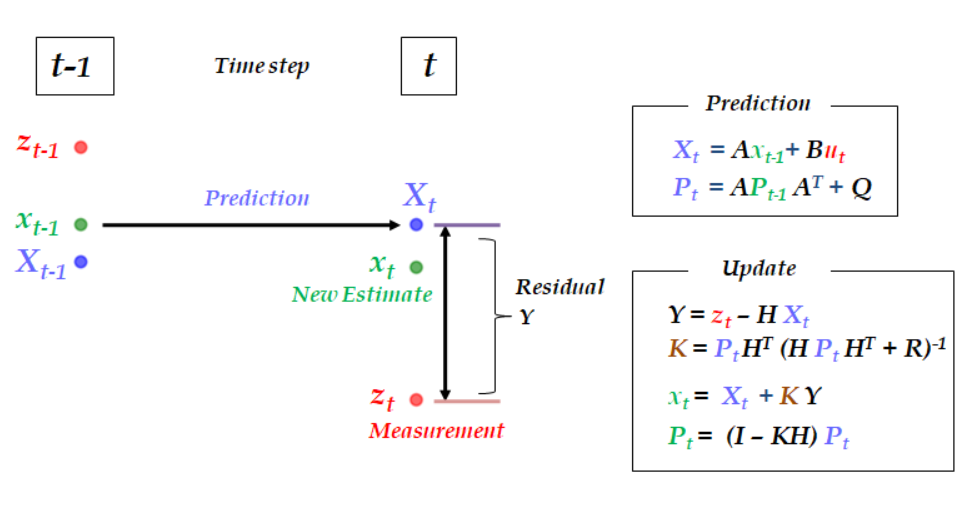
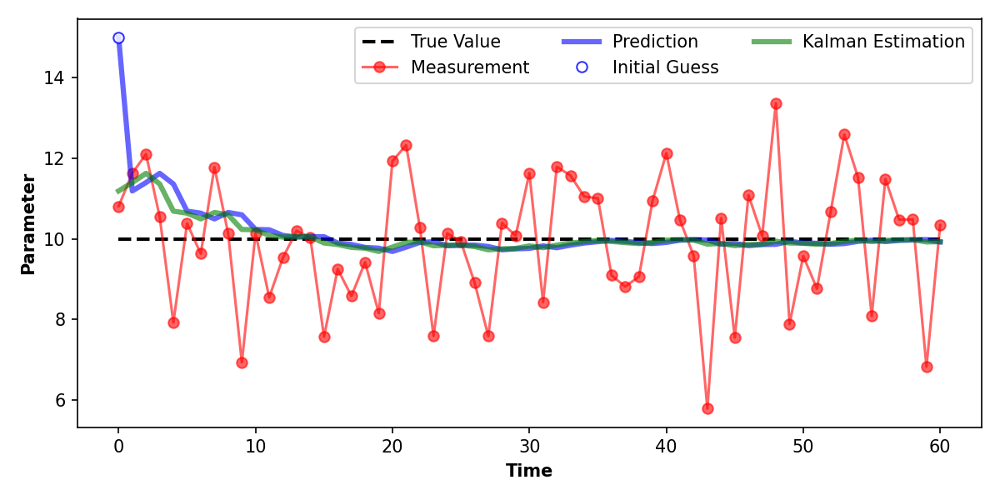

This page highlights my understanding and knowledge of certain concepts in sensor fusion. I've implemented these concepts in python using some application examples and presented the results of the simulations.
Bayesian Inference
Bayesian inference is the method of statistical inference in which Baye's theorem is used to update the probability for a hypothesis from new evidence.
A Bayesian Belief Network (BBN) is a probabilistic graphical model that represents a set of random variables and their conditional dependencies via a directedacyclic graph.
"Probabilistic" : Output is between 0 to 100%
"Conditional Dependencies" : Evidence points towards a failure mode.
"Directed" : Arrows indicate the flow of information.
"Acyclic" : No circular reference.
BBNs can be used for diagnostics of faults by combining symptoms or evidence nodes using conditional probability relationships. It primarily performs a "sensor fusion" of a pattern of symptoms which results in translating a continuous variable degradation into a health indicator (or probability of failure ranging from 0 to 1).
Engineering assessment of the system can help guide the development of the BBN and connect possible symptoms to a potential fault. Symptoms or evidences of degradation can be deviations of system parameters or measurements from normal operating behavior. The following figure gives an example of a simple BBN with four evidence node assumed to be conditionally independent.

Evidence weighting can be done to define the relative importance of each symptom within a BBN.
Thresholds can be defined for each deviation to identify regions of Normal, Warning, Alert, or Danger. The following simulation shows an example for estimating the probability of failure (Heatlh index) from four deviations over a duration of time.
PySmile Library from Bayes Fusion was used for the executing the network.
Kalman Filtering
Kalman filtering is an algorithm that is capable of using inaccurate and/or noisy measurements to correctly estimate the variables in a system. It is basically a powerful tool for combining information in the presense of uncertainty.
It is an effective tool used in numerous applications, such as guidance, navigation, and control of vehicles, signal processing, weather forecasting, health monitoring, economics, etc.
The Kalman filter process basically works in two steps: the prediction step, where the next state of the system is previous state and the system model, and the update step, where the current state of the system is updated given the measurements at the current time step.
The following figure lays out the equations involved in the prediction and the update step, while the key parameters used are listed below.
Xt, Pt : predicted state and covariance of the state at the current time step, t, using the estimates from the previous time step, t-1.
A, B : the state-transition model and the control-input model.
Q, R : covariance of the process noise and observation noise.
H : the observation model, which maps the states into the measurements.
zt : measurements at time step t.
K : Kalman gain.
xt, Pt : estimated state and covariance of the state at the current time step, t, using the prediction and the sensor measurements at the current time step.

The following figure shows a simple 1-D example to demonstrate the working of a Kalman filter in correctly estimating a parameter with noisy sensor measurements.

While the basic Kalman filter is a useful algorithm, it works only for linear systems. Most real-world applications, however, involve nonlinear systems. The nonlinearity can be associated either with the process model or with the observation model or with both.
One variation of the Kalman filter is called the Extended Kalman Filter (EKF) . The EKF handles nonlinearity by linearizing the system at the point of the current estimate, and then the linear Kalman filter is used to filter this linearized system. It was one of the very first techniques used for nonlinear problems, and it remains the most common technique.
The following video is an example of EKF that models the motion of a robot on a 2d plane. There are three state variables: x-position, y-position and heading angle. The robot observes landmarks in its path and corrects its motion. The covariance of the state variables is shown as a red ellipse that grows because of the noise in the prediction model and once a landmark is detected, the EKF updates to more accurate state estimates.